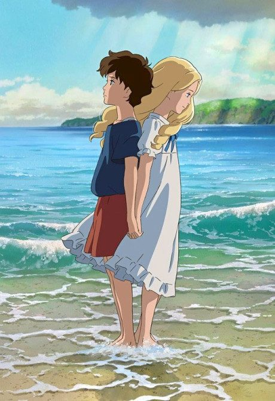

Anime2014 · Drama, Mystery, Psychological
When Marnie Was There
思い出のマーニー
AniList7.8
Animeter—
Movie1 ep
MangaFilm
Is it worth watching?
The drop map is for series. Rate the film above to add to its Animeter score.